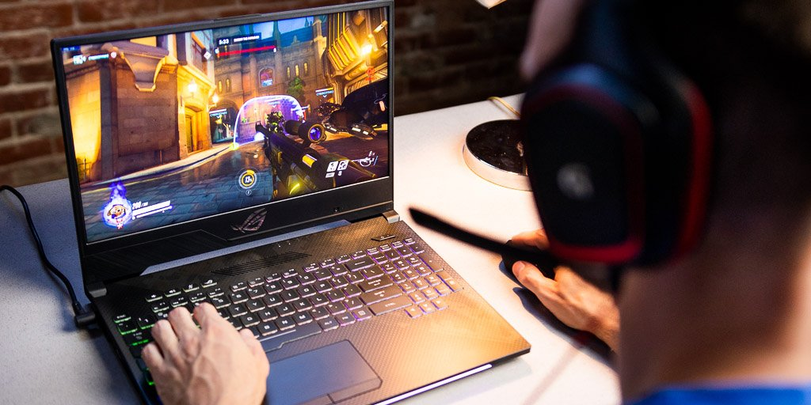

Latest Release:
ACER PREDATOR HELIOS 300
Ready for battle and eager for a fight, the Helios 300 drops you into the game with everything you need. Only now we’ve armed it with NVIDIA® GeForce RTX™ graphics, 9th Gen Intel® Core™ i7 Processors and our custom-engineered 4th Gen AeroBlade™ 3D Technology. Your gaming laptop’s style should match your own – with a look that says, “Start the match! I’m ready!” So that when the black, metal-clad3 machine flares into life, filling the 17-inch1 screen of the narrow-frame display with lurid colors, let it remind them that you know only one path: victory.
Top Gaming Laptops for 2020
We break down the top 5 models out there right now.
You need the best gaming laptop that money can buy, and here at TopTech we happen to be experts at rating and picking PC gaming hardware. Our best gaming laptop 2020 guide has been designed to make discovering and selecting a great system incredibly easy, whatever your budget or intended usage scenario. As well as telling you all the key specs and features you need to know about, we'll also bring you the best gaming laptop deals on the market right now: you might be able to pick up the perfect computer for you for less than you think.